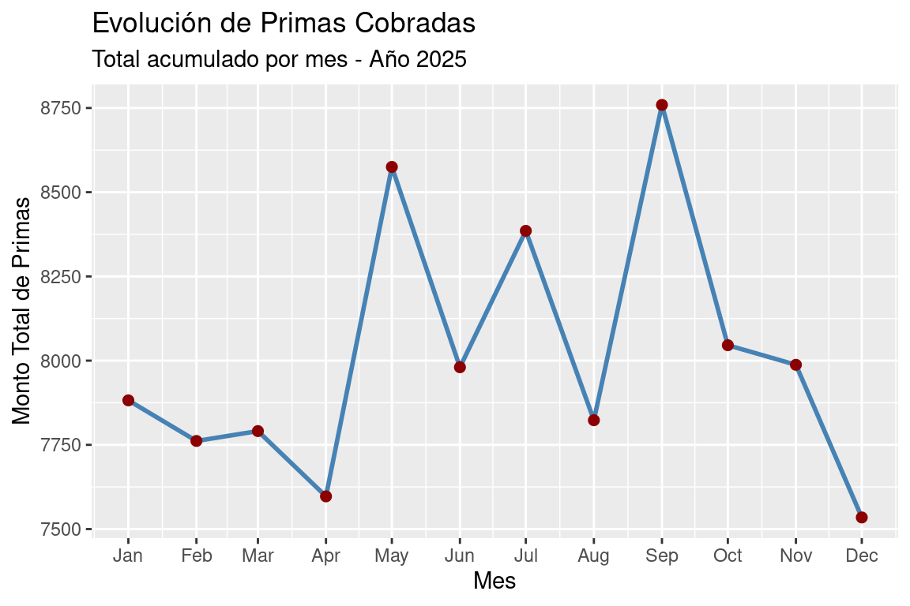
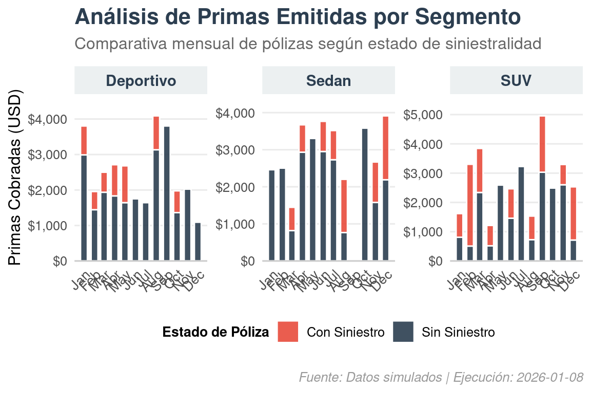

library(tidyverse)
library(ggplot2)
library(scales)
# Semilla para reproducibilidad
set.seed(123)
cartera <- tibble(
edad = sample(18:70, 120, replace = TRUE),
tipo_auto = sample(c("Sedan", "SUV", "Deportivo"), 120, replace = T),
prima = jitter(edad * 10 + sample(200:500, 120)),
siniestro = sample(c(0, 1), 120, replace = TRUE, prob = c(0.8, 0.2)),
mes = rep(seq(as.Date("2025-01-01"), by = "month", length.out = 12), times = 10)
) %>%
mutate(siniestro = as.factor(siniestro))Módulo 6: Visualización Avanzada
La Gramática de Gráficos con ggplot2
Prof. Oliver Triveño
La Filosofía ggplot2
ggplot2 es un sistema para crear gráficos de forma declarativa, basado en la “Gramática de Gráficos”. Esto significa que construyes tus visualizaciones especificando componentes en lugar de los pasos exactos para dibujarlos.
A diferencia de Excel, aquí no elegimos un “gráfico de la galería”. Construimos el gráfico por capas, como si estuviéramos pintando un cuadro.
La estructura básica es: \[Gráfico = Datos + Estética (aes) + Geometría (geom)\]
Gramática de gráficos:
Datos (data): El data frame con la información que quieres visualizar.
Mapeos estéticos (aes()): Define cómo las variables de tus datos se traducen en propiedades visuales (ejes x, y, color, tamaño, forma, etc.).
Geometrías (geom_*): El tipo de gráfico que quieres dibujar (puntos, líneas, barras, etc.).
Estructura Básica de ggplot2
La estructura fundamental de un gráfico en ggplot2 es simple:
- Empiezas con la función ggplot()
- Especificas los datos y los mapeos estéticos
- Añade capas usando +.
Preparando los Datos
Vamos a simular una cartera de seguros de Automóvil para los ejemplos.
1. Dispersión (Scatter Plot)
Relación entre dos variables numéricas.
OJO: Usamos + para agregar capas, no %>%.
Mapeo de Colores (Aesthetics)
¿Y si queremos que el color dependa de una variable (ej. Tipo de Auto)? Movemos color DENTRO de aes().
2. Gráficos de Distribución
Vitales para actuarios: Histogramas y Boxplots.
Histograma (Variable Numérica)
Densidad (Variable Numérica)
Boxplot (Numérica vs Categórica)
Para ver dispersión y outliers por grupo.
Lineas
Ideal para representar series temporales o la evolución de una variable a lo largo de otra continua ordenada.
# 1. Agrupamos y sumarizamos para obtener el total por mes
cartera_resumen <- cartera %>%
group_by(mes) %>%
summarise(total_prima = sum(prima))
# 2. Generamos el gráfico
ggplot(cartera_resumen, aes(x = mes, y = total_prima)) +
# Usamos geom_line y geom_point para ver la tendencia
geom_line(color = "steelblue", linewidth = 1) +
geom_point(color = "darkred", size = 2) +
# Ajustes de formato para el eje de fechas
scale_x_date(date_labels = "%b", date_breaks = "1 month") +
labs(
title = "Evolución de Primas Cobradas",
subtitle = "Total acumulado por mes - Año 2025",
x = "Mes",
y = "Monto Total de Primas"
)
Personalización
Etiquetas y Títulos (labs())
labs() permite añadir y modificar fácilmente títulos, subtítulos, pies de página y etiquetas de ejes.
Personalización
Temas (theme_*())
Personalización
Escalas (scale_*())
Las escalas controlan cómo los datos se mapean a los estéticos.
Ejes: scale_x_continuous(), scale_y_log10(), scale_x_date(), etc., para controlar rangos, breaks, transformaciones.
Colores/Rellenos: scale_color_manual(), scale_fill_brewer(), scale_fill_viridis_d(), etc., para definir paletas de colores o asignaciones manuales.Personalización
Facetas (facet_wrap() y facet_grid())
Ejemplo Personalización
# --- 1. Preparación de los datos (Igual que antes) ---
cartera_grafico <- cartera %>%
group_by(mes, tipo_auto, siniestro) %>%
summarise(monto_primas = sum(prima), .groups = "drop") %>%
mutate(siniestro_label = ifelse(siniestro == 1, "Con Siniestro", "Sin Siniestro"))
# --- 2. Gráfico 100% ggplot2 Nativo ---
ggplot(cartera_grafico, aes(x = mes, y = monto_primas, fill = siniestro_label)) +
# --- Geometrías ---
# width = 20 ajusta el ancho de las barras (días) para que no se toquen entre meses
geom_col(width = 20, color = "white", alpha = 0.9) +
# --- Facetas ---
facet_wrap(~tipo_auto, scales = "free_y") +
# --- Escalas ---
scale_y_continuous(
labels = scales::dollar_format(prefix = "$", big.mark = ","),
# expansion añade un 15% extra arriba para que las etiquetas o barras no toquen el techo
expand = expansion(mult = c(0, 0.15))
) +
scale_x_date(
date_labels = "%b",
date_breaks = "1 month"
) +
scale_fill_manual(
values = c("Sin Siniestro" = "#2C3E50", "Con Siniestro" = "#E74C3C")
) +
# --- Etiquetas ---
labs(
title = "Análisis de Primas Emitidas por Segmento",
subtitle = "Comparativa mensual de pólizas según estado de siniestralidad",
x = NULL,
y = "Primas Cobradas (USD)",
fill = "Estado de Póliza",
caption = paste0("Fuente: Datos simulados | Ejecución: ", Sys.Date())
) +
# --- Tema Personalizado ---
theme_minimal(base_size = 12) +
theme(
# Títulos y Textos (Usando element_text nativo)
plot.title = element_text(face = "bold", size = 16, color = "#2c3e50", hjust = 0),
plot.subtitle = element_text(size = 12, color = "grey40", margin = margin(b = 10)),
plot.caption = element_text(color = "grey60", face = "italic", margin = margin(t = 15)),
# Leyenda movida abajo para dar más espacio al gráfico
legend.position = "bottom",
legend.title = element_text(face = "bold", size = 10),
# Estilo de las facetas (Cajitas grises arriba de cada gráfico)
strip.background = element_rect(fill = "#ECF0F1", color = NA),
strip.text = element_text(face = "bold", color = "#2C3E50", size = 11),
# Limpieza de Ejes
axis.text.x = element_text(angle = 45, hjust = 1, size = 10), # Rotación para leer los meses
axis.line.x = element_line(color = "grey80"), # Línea sutil en el eje X
panel.grid.minor = element_blank(), # Eliminar cuadrícula menor
panel.grid.major.x = element_blank() # Eliminar líneas verticales para limpieza visual
)Ejemplo Personalización

Visualización con ggplot2